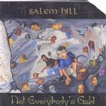

| Artist: | Salem Hill |
| Title: | Not Everybody's Gold |
| Label: | Cyclops CYCL 085 |
| Length(s): | 70 minutes |
| Year(s) of release: | 2000 |
| Month of review: | [03/2001] |
| 2) | Riding The Fence | 6.23 |
| 3) | The Last Enemy | 7.49 |
| 5) | Let Loose The Arrow | 7.04 |
| 6) | We Don't Know | 4.43 |
Riding The Fence is a pacey piece with a very catchy chorus (including the harmony backing). The drumming is really driven, but the vocal melody is maybe just that bit too catchy. The hectic piano intermezzo reminds me a bit of the busy parts of Landmarq's Ta Jiang. The percussive follow-up with acoustic guitar is somewhat odd here, but the all-out keyboard runs of the first part of the track return to turn into jazzier areas to conclude with the pumping chorus.
The Last Enemy I already new from the DURP compilation. This is singalong ballad with a terrific vocal melody. This song could also have been written by Canadian Mystery. A very good composition.
January opens in a plodding fashion. The song alternates this plodding part riddled with strange keyboard runs with a strong chorus. The intermezzo is rather dark with some nice atmospherics on the rhythm guitar. Then a keyboard solo starts its meandering accompanied with a stumbling bass line.
The opening of Let Loose The Arrow has quite a bit of Spock's Beard, but the vocal part owes a lot to Kansas. Stilistically not original at all, but again a great track with some great melodies, a track that radiates optimism including some perfect vocal harmonies. The church organ takes this song somewhere else entirely.
The band simply continues with its great songs on We Don't Know, where the vocalist shows the back his tongue. The brimming organ may remind some of the louder parts of Spock's Beard. The vocalist has a totally different voice, so this is also where the comparison ends.
The final track is the half an hour of Sweet Hope Suite. The song opens forcefully with staccato drums and guitar. Again, I am reminded of the organic forcefulness of Spock's Beard. After some eerie UKish keyboards, we come some easy-going harmony parts. Then the song starts to evolve, with some parts reappearing along the way (the opening for instance), but also some rather all-out keyboard solo's as well. Sometimes the music can be quite noisy and hectic, but for the most part the band does not differ much from what has gone before. The second part of the song has again some very distinctive vocal lines, some nice acoustic guitar, playful piano and a strong bass presence. The music is rather finicky and lightfooted here. The third part of the track has a vocal melody reminiscent of The Last Enemy, which means it is a bit sad. The final guitar solo is strangely enough a bit subdued, but the music does fire up a bit. Just before the 28 minute mark the song ends.
The afterbirth on this track is...well...you should hear it yourself. Maybe this track is The Blind Place, it does feature a trumpet.
The lyrics are good throughout and shows that native Englishmen/Americans usually have a better way with words.
The only track that did not seem to fit well on the album, Riding The Fence, you'll get used to, same way I did. Very American progressive (if you do not know what I mean, I am afraid I can't explain it well) with great song sensibility, plenty of variation and a good ear for melody.